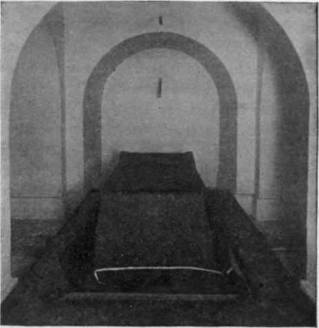

Washington Tomb And Statue
Description
This section is from the book "The National Capitol. Its Architecture Art And History", by George C. Hazelton, Jr. Also available from Amazon: The National Capitol Its Architecture Art and History.
Washington Tomb And Statue
Beneath the star in the center of the crypt is a tomb known as the " Washington Tomb." Above it, formerly, was a circular opening in the floor of the rotunda, evidently for the purpose of lighting the crypt and permitting visitors to look down upon the statue above the tomb as they now look down upon the sarcophagus of the first Napoleon at the Hotel des Invalides in Paris, " where rest at last the ashes of that restless man".
"A notion had long prevailed," writes Trumbull, about 1824, "that a statue of Washington must be placed in the Capitol—and where so well as under the centre of the dome, on the ground floor, where it would be always accessible to and under the eye of the people; the ground floor might then become a magnificent crypt, and the monument of the father of his country, surrounded by those of her illustrious sons, might there seem still to watch over and to guard the interests of the nation which they had founded. The idea was poetical, grand, and captivating.
" The statue being there, must be lighted, and as the projections of the porticos must necessarily screen all the light which might otherwise have been obtained from the arches between the piers of the ground floor, it was evident that the object could only be attained by letting down light from the summit of the dome; and to effect this, it would be necessary also to pierce the floor of the grand room, with an opening large enough for the purpose, say twenty feet diameter, at least. These whims prevailed, and the project was adopted".
As early as December 23, 1799, it was resolved by Congress that a marble statue be erected in the Capitol and that the family of General Washington be requested to permit his body to be deposited under it. The monument was to be so designed as to commemorate the great events of his military and political life. Washington had just passed away, and President John Adams transmitted a copy of the resolution to his widow, then at Mount Vernon, with assurances of the profound respect of Congress for her person and character, and of their condolence in her late affliction. Mrs. Martha Washington responded by letter of December 31st, expressing her grateful acknowledgment and unfeigned thanks for the mournful tributes of respect and veneration paid to the memory of her deceased husband and consenting to the request of Congress. It was, no doubt, made an express or implied condition by her that, upon her own demise, she should be allowed to rest at the side of her honored husband in the nation's tomb. It is certain that in this belief Mrs. Washington directed that, upon her decease, her remains should be enclosed in a leaden coffin similar to the one containing the ashes of her illustrious consort, a wish respectfully carried out at the time of her death.
Various other resolutions were offered and considerable correspondence * carried on regarding the ceremonies of removal from Mount Vernon; and the tomb was made ready. The year 1832 arrived, however, without any such removal having taken place. In the early part of that year, the Legislature of the State of Virginia, jealous of her hero resting in national soil, passed a resolution against it. The matter was determined by a letter, dated February 15, 1832, from John A. Washington, who was then the proprietor of Mount Vernon, denying the request made by Congress. In spite of the graceful way in which his reply was couched, it is the common report that a selfish motive only led him to the determination. The removal of the remains of the immortal Washington would certainly have much reduced the value of Mount Vernon in the public interest.
The two following entries in the prolific diary of the second Adams throw some light upon this question :
Feb. 16th, 1832
At the opening of the sitting of the House, the Speaker announced the correspondence between the Vice-President with himself and John A. Washington, the present proprietor of Mount Vernon, and George W. P. Custis, the grandson of Mrs. Martha Washington. John A. Washington declines giving permission that the remains of George Washington should be removed from Mount Vernon, though Mr. Custis does consent that those of Mrs. Martha Washington should be removed. They must remain where they are. This affair is therefore now settled".
THE WASHINGTON TOMB.
For full account of the proceedings, see Appendix, p. 273.
Feb. 22, 1832
Centennial birthday of Washington. The solemnities intended for this day at this place lost all their interest for me by the refusal of John A. Washington to permit the remains of George Washington to be transferred to be entombed under the Capitol—a refusal to which I believe he was not competent, and into the real operative motives to which I wish not to inquire. I did wish that this resolution might have been carried into execution, but this wish was connected with an imagination that this federal Union was to last for ages. I now disbelieve its duration for twenty years, and doubt its continuance for five. It is falling into the sear and yellow leaf".
At the time of his death the advisability of honoring Grant with a final resting-place in the " Washington Tomb " was agitated. The family, however, who were then residing in New York, were averse to having the body interred elsewhere, and the State itself, like Virginia in the case of Washington, was jealous of any interment which would remove her citizen-hero from her soil. Nothing came of it; and the tomb in the Capitol is still vacant, except for the simple bier of boards covered with black cloth which was used to support the remains of Lincoln, and which has been used for each citizen laid in state at the Capitol since that dark day.
Continue to:
- prev: The Crypt
- Table of Contents
- next: Court Of Claims